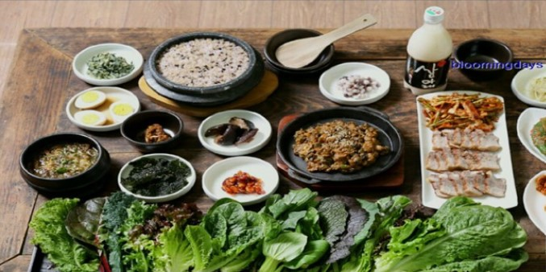
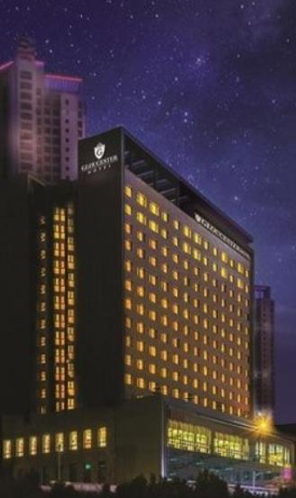
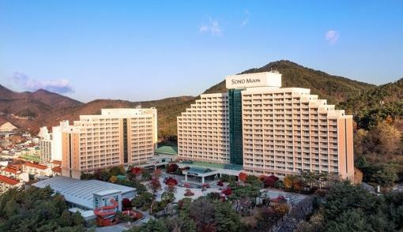

소백산 국립공원은 대한민국 제 18호 국립공원으로
한국인이 좋아하는 산 중 12위에 등재되어 있습니다.
봄이 되면 연화봉 일대에서 소백산 철쭉제가 열리고
겨울에는 거대한 설원이 됩니다. 행정구역상 충북 단양군과
경북 영주시에 걸쳐 있어서 많은 유명한 등산 코스들이
있습니다. 충청북도 쪽에는 천동 코스, 어의곡 코스,
죽령 코스가 있습니다.
국립현대미술관 청주관
(충청북도 청주시 청원구 상당로 314)
국립현대미술관 청주관은 2018년 12월 27일에
개관하여 개방형 수장고로서 국립현대미술관이
수장중인 작품을 지방에서도 향유할 수 있는 공간으로
사용되고 있습니다. 내부에는 상설 수장전시장,
항온항습 수장고, 특별수장 전시장 및 기획 전시장
등이 들어섰고 이중 일부 수장품을 관람객에게
개방하고 있습니다.
충청북도의 맛집
마늘석갈비막국수
(충청북도 단양군 단양읍 단양로 510)
마늘 석갈비 막국수는 단양에서 먹을 수 있는
특이한 음식으로 돌 위에서 고기를 굽는 방식으로
음식을 만들고 있습니다. 메뉴로는 마늘 돼지 석가립,
고추장 돼지 석갈비 등의 갈비 종류와 메밀만두,
도토리묵 등 다양한 메뉴가 있습니다.

산아래
(충청북도 제천시 봉양읍 앞산로 174)
산아래는 제천 대표 음식 브랜드 약채락
지정업소이어서 농림부 후원 친환경 농산물 우수식당,
농림부와 식약처장 표창 등의 상을 수상하였던 업적이
있습니다. 유기농 쌈채와 신의 선물인 발아(싹이 난)
현미로 밥을 짓는 것이 특징입니다. 대표 메뉴로는
소불거기 세트, 오징어 더덕 두루치기 쌈밥, 한우 바싹
더덕불고기 등이 있습니다.
서울의 숙소

글로스터 호텔 청주
(충청북도 청주시 흥덕구 대농로 47-2)
글로스터 호텔은 세계적 첨단 산업단지 중심지 청주에 위치해 있습니다.
비즈니스맨들이 출장 시 이용하는 비즈니스 호텔과 주거시설이 갖춰진 레지던스 호텔을
이용할 수 있는 '비즈던스 호텔'이며, 주변에는 현대백화점과
롯데아울렛, 롯데마트, CGV, 대형 상업시설이 인접 해 있는
도심 속 호텔입니다. 서청주 IC에서 5분, 청주국제공항과
고속시외버스 터미널에서 10분, KTX 오송역에서 20분 거리에
위치 해 있습니다.

소노문 단양
(충청북도 단양군 단양읍 삼봉로 187-17)
2002년 12월에 대명리조트 단양으로 오픈하였습니다.
다만 단양읍 자체가 규모가 큰 것도 아니고,
읍 전체를 남한강이 휘어감고 있기 때문에, 날이 좋으면
상당히 멋진 풍경을 자랑한다. 거기다 걸어서 20분거리에
있는 단양시외버스터미널과 주변 상가들은 덤으로 즐기실 수
있습니다. 그만큼 접근성이 좋고, 근처에 소백산,
도담삼봉, 충주호 등이 위치하기 때문에, 중부내륙 관광의
거점으로 삼기 좋은 위치다. 내부에는 오션플레이라는
규모가 꽤 큰 실내 수영장이 있다.